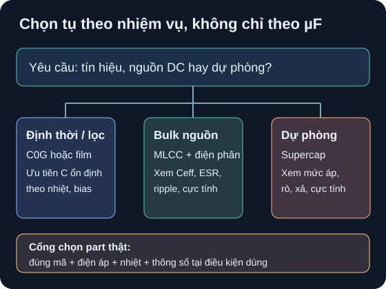

Các Họ Tụ Điện
Từ chức năng mạch đến công nghệ tụ phù hợp và cổng đọc datasheet.
- Phân loại ceramic Class 1/Class 2, film, nhôm điện phân, polymer và supercap; nêu cực tính thường gặp và biến số cần kiểm cho từng họ.
- Chọn họ tụ cho định thời, bulk nguồn và ghép AC, giải thích vì sao hai tụ cùng điện dung không tự động thay thế được.
- Tính năng lượng của mô hình tụ lý tưởng tại hai mức áp, rồi nêu ít nhất ba giới hạn thực mà phép tính không chứng minh.
- Trích một bảng của nhà sản xuất với mã part, điện áp, nhiệt độ, dung sai và điều kiện của ESR/ripple trước khi duyệt linh kiện thật.

Đọc mô tả A03-1
Yêu cầu mạch rẽ thành ba nhóm. Định thời và lọc tần số cần xem độ ổn định nên cân nhắc C0G hoặc film. Bulk nguồn cần C hữu hiệu, dòng ripple và ESR nên cân nhắc phối hợp MLCC với tụ điện phân. Dự phòng dùng supercap nhưng phải kiểm điện áp, dòng rò, cực tính và đường xả. Tất cả đều phải quay lại dữ liệu của đúng mã part.
1. Họ tụ là một tập điều kiện, không phải một con số µF
D08 đã giới thiệu điện dung và cực tính. Ở đây ta chọn theo độ ổn định của C, điện áp làm việc, tần số, nhiệt, dòng ripple, kích thước và tuổi thọ. Với tụ gốm, Murata phân biệt Class 1 như C0G, ít đổi theo nhiệt và DC bias, với Class 2 như X5R/X7R có thể đạt C lớn hơn nhưng có thay đổi theo nhiệt, DC bias và thời gian. Đó là khác biệt theo họ, chưa phải giới hạn bảo đảm của từng mã. Nguồn: Murata, FAQ “Class 1 vs Class 2”, bảng so sánh.
| Họ | Đặc tính / nhiệm vụ thường gặp | Cực tính | Cổng đọc datasheet |
|---|---|---|---|
| MLCC Class 1, ví dụ C0G | Giá trị thường thấp hơn Class 2; phù hợp mạng cần C ổn định như cộng hưởng, định thời nhỏ. | Không phân cực trong ứng dụng DC thông thường. | C, sai số, điện áp, nhiệt, tổn hao, package; không suy C0G nào cũng đủ C mục tiêu. |
| MLCC Class 2, ví dụ X5R/X7R | C lớn trong package nhỏ, hay dùng bypass/decoupling; C hữu hiệu phải xem dưới DC bias. | Không phân cực trong ứng dụng DC thông thường. | Đường C–V đúng mã, dung sai, nhiệt, DC/AC rating và tự nung nóng. Murata. |
| Film | Ứng viên cho ghép tín hiệu AC, timing hoặc xung tùy series; không lấy tên “film” làm bảo đảm cho mọi mức áp hay tần số. | Thường không phân cực; kiểm đúng series. | Điện áp DC/AC, xung, nhiệt, kích thước và loại điện môi; KEMET C4C, datasheet ứng dụng coupling/decoupling. |
| Nhôm điện phân ướt | Ứng viên bulk nguồn DC với C lớn; có ESR, dòng rò, suy giảm theo nhiệt và tuổi thọ. | Đa số có cực, chân + ở rail dương, − ở GND trong ví dụ nguồn dương. | Điện áp định mức, ripple tại tần số/nhiệt, ESR hoặc tan δ, dòng rò, nhiệt và tuổi thọ. Nichicon, mục Application Guidelines §2-3. |
| Nhôm điện phân polymer | Một số series có ESR thấp và ripple cao; không đồng nhất với tụ nhôm ướt cùng C. | Thông thường có cực; đọc dấu trên đúng package. | ESR và ripple ghi theo điều kiện thử cụ thể; Nichicon FPCAP, bảng ESR 20 °C/100 kHz. |
| Supercap / EDLC | Dự trữ năng lượng hoặc backup trong phạm vi điện áp thấp của part; dòng rò và thời gian xả ảnh hưởng thời gian giữ. | Nhiều loại có cực; kiểm theo mã và dấu chân. | Điện áp mỗi cell, dòng rò, ESR, giới hạn nhiệt, cân bằng khi nối tiếp; Panasonic, EDLC Technical Guide. |
2. Ba quyết định kỹ thuật có thể bảo vệ được
2.1 Định thời
Nếu sai số thời gian rất nhạy với C và chỉ cần điện dung nhỏ, khảo sát C0G hoặc film trước. Class 2 vẫn có thể dùng nếu đường C–V và sai số cuối mạch chấp nhận được; không loại chỉ vì nhãn công nghệ. Với RC, đổi C làm đổi τ; xem tiếp A04. Cách phân biệt bias của hai class dựa trên Murata, bảng Class 1/Class 2.
2.2 Bulk nguồn DC
Ví dụ nguồn thấp áp dương có rail +V và GND: nếu dùng tụ nhôm phân cực, cực + nối +V, cực − nối GND. MLCC gần tải thường xử lý thành phần nhanh hơn theo layout thực, còn tụ bulk giúp dự trữ điện tích; chọn trị số và tổ hợp phải dựa trên phổ dòng, ESR/ESL, ripple, nhiệt và yêu cầu regulator. Nichicon cảnh báo điện áp ngược trên tụ điện phân có thể làm dòng rò tăng mạnh; không suy “tụ 100 µF bất kỳ” đều đặt được ở vị trí này. Nichicon, §2-3 Operating Voltage and Safety.
Ứng viên MLCC có thật Murata GRM188R61A106MAAL, bảng product detail ghi 10 µF ±20%, 10 VDC, X5R. Với rail 5 V lý tưởng, part chỉ qua cổng áp danh định; chưa đủ kết luận về C hữu hiệu ở 5 V, quá độ, nhiệt và dòng ripple. Bài A04 chỉ cách lấy đường C–V đúng mã trước khi chọn.
2.3 Ghép AC
Mạch ghép AC có điện áp hai đầu đổi dấu cần tụ được nhà sản xuất cho phép cho dạng sóng đó; film hoặc loại không phân cực phù hợp là ứng viên. Tụ điện phân có cực chỉ dùng khi toàn bộ điện áp tức thời, kể cả thành phần AC và quá độ, không đẩy linh kiện vào phân cực ngược ngoài giới hạn; kiểm series cụ thể. KEMET C4C, mô tả coupling; Nichicon, §2-3.
3. Ví dụ giải: năng lượng giống nhau chưa có nghĩa thay thế được
Dữ kiện bài toán: tụ lý tưởng 100 µF ở 10 V. Ta giả định C không đổi, không có ESR hay dòng rò, và nguồn DC không vượt 10 V. Dấu +/− trên sơ đồ chỉ biểu diễn điện áp; nếu dùng tụ điện phân thật thì cực + phải về nút 10 V và cực − về GND.
- Đổi đơn vị:
100 µF = 100 × 10⁻⁶ F = 0,000100 F. - Thay số ở 10 V:
E = ½ × 0,000100 × 10² = 0,005 J = 5 mJ. - Ở 5 V:
E = ½ × 0,000100 × 5² = 0,00125 J = 1,25 mJ. Giảm điện áp còn một nửa làm năng lượng còn một phần tư trong mô hình C không đổi. - Hai tụ 100 µF có cùng
Etrong mô hình này vẫn có thể khác ESR, dòng rò, giới hạn ripple, nhiệt, tuổi thọ, cực tính và C hữu hiệu. Không dùng kết quả 5 mJ để kết luận an toàn xả hay chọn được part.
4. Hoạt động tái lập: bảng chọn ba chức năng
Chọn ba chức năng: định thời, bulk nguồn 5 V DC và ghép AC. Mỗi chức năng ghi điều kiện cụ thể:
Vmax, nhiệt độ, tần số/tải, mức C tối thiểu và cực tính cho phép. Nếu thiếu điều kiện, đánh dấu “chưa biết”.Dùng bảng công nghệ Murata và hướng dẫn Nichicon để chọn họ. Sau đó mở trang part Murata, catalog part Nichicon và bảng part KEMET C4C; chọn mã ứng viên phù hợp mỗi chức năng. Ghi mã đầy đủ, URL, revision/ngày, bảng/trang, C danh định, dung sai, điện áp, nhiệt, cực tính và mục cần kiểm thêm. Nếu không tìm được mã đủ điều kiện, ghi “chưa có ứng viên”.
Với giá trị mô hình 100 µF, lập bảng năng lượng ở 5 V và 10 V:
1,25 mJvà5 mJ. Dùng công thức bảng tính=0.5*100E-6*V^2. Đây là mốc tính tay, không phải dữ liệu đo của ba ứng viên.Viết kết luận “qua cổng”, “loại” hoặc “chưa đủ dữ liệu” cho mỗi ứng viên. Không chốt BOM chỉ từ catalog công nghệ; chuyển sang trang part/datasheet của mã chính xác để kiểm thông số dưới điều kiện dùng.
| Chức năng | Họ / mã ứng viên | C / V / nhiệt / cực | Thông số cần đọc tiếp | Kết luận |
|---|---|---|---|---|
| Định thời | _____ | _____ | Đường C–V, dung sai | _____ |
| Bulk 5 V | _____ | _____ | ESR/ripple, cực tính | _____ |
| Ghép AC | _____ | _____ | Điện áp AC, tần số | _____ |
Bài này chỉ yêu cầu phân tích trên giấy/bảng tính. Muốn cấp điện, cần xác nhận mã part, package, dấu cực, điện áp cực đại cả quá độ, nguồn giới hạn dòng, đường xả và người duyệt mạch. Với supercap, còn phải xét dòng rò, điện áp mỗi cell và cân bằng nếu nối tiếp; không thử xả chập bằng tay.
Một tụ được giả định có C không đổi bằng 47 µF ở 6 V. Tính năng lượng mô hình bằng J và mJ. Một bạn kết luận “năng lượng dưới 1 mJ nên xả chập an toàn” và chọn tụ nhôm phân cực để ghép một tín hiệu AC đổi dấu. Đánh giá hai kết luận đó; nêu dữ liệu cần đọc trước khi chọn part.
- Mô hình, 1 điểm: ghi
E=½CV², giả định tụ lý tưởng; điện áp 6 V trên hai cực, nếu chọn tụ có cực phải chỉ đúng dấu áp. - Đơn vị, 1 điểm:
47 µF = 47×10⁻⁶ F,6²=36 V². - Kết quả, 1 điểm:
E=0,5×47×10⁻⁶×36=846×10⁻⁶ J=0,000846 J=0,846 mJ. - Giới hạn và chọn part, 1 điểm: 0,846 mJ không chứng minh dòng đỉnh, ESR, nguy cơ hỏng hoặc quy trình xả an toàn. AC đổi dấu có thể phân cực ngược tụ nhôm; chọn loại được datasheet cho phép sau khi biết điện áp tức thời, tần số, nhiệt, C hữu hiệu, ESR/ripple và cực tính.